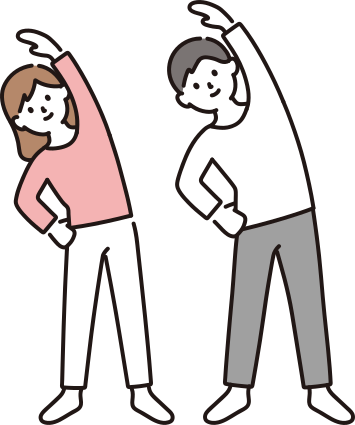
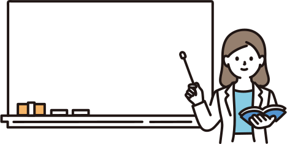
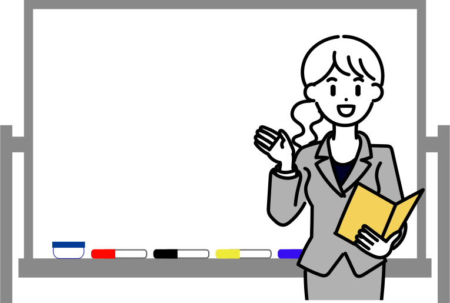
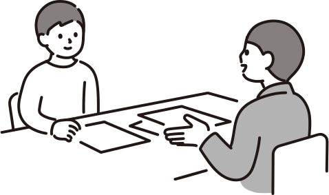
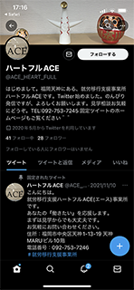
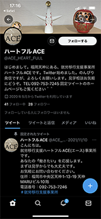
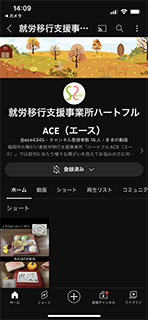
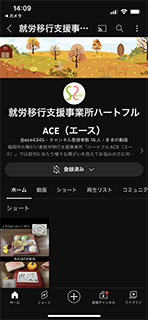

就労移行支援事業所ハートフルＡＣＥ
ハートフルACEって どんなとこ？
どんなとこ？

カリキュラムについて
- カリキュラム時間割
- 月～金 11：00 ～ 11：50
| (月)メンタルヘルス |
|
|---|---|
| (火)ビジネスマナー |
|
| (水)就活について |
|
| (木)生活訓練 |
|
| (金)PC学習 |
|
| (土)運動 |
|
※ほかにもたくさんのカリキュラムをご用意しております。
ＡＣＥのスケジュール

| 【10時】運動 | ラジオ体操第一・第二で体をほぐし、自律神経を整える運動で毎日リフレッシュしています。  | |
|---|---|---|
| 【11時】カリキュラム | メンタルヘルス・ビジネスマナー講座などわかりやすいテキストをご用意しております。  | ※自宅からもオンライン(zoom) |
| 【12時】昼休み |
おいしい日替わり弁当を3種類、無料で提供しています。 |
|
| 【13～18時】午後の活動 |
|

施設紹介


利用者さんの声
20代男性Aさん
ACE(エース)のおかげで就職できました。
仕事の悩みも定期的に聞いてくれるのでこれからも安心して働けそうです。
10代女性Bさん
初めてスーツを買うときもいろいろサポートしてくれて嬉しかったです。
よくあるご質問
手続きについて
 ACE(エース)の利用料は？
ACE(エース)の利用料は？

当事業所の利用をご希望される方の生活状況によって異なりますが、基本的には無料でご利用いただけます。
役所への届け出・手続き関係は？
必要であればハートフルACE(エース)のスタッフも同行いたします。
通院なし・障がい者手帳なしでも利用できるの？
自治体の判断により利用可能な場合があります。
必要な方には病院を探すお手伝いや障がい者手帳の申請についての助言など幅広く対応しておりますので、お気軽にお問い合わせください。
通所について
朝から通わないといけないの？
午後からの利用や短時間の通所でも大丈夫！
まずはハートフルACE(エース)に慣れることから始めてみませんか？自分のペースでゆっくり通っていきましょう。
自宅からのカリキュラム参加はできるの？
オンライン対応もばっちり！
ビデオ通話アプリ(zoom)を利用することで、パソコンやスマホがあればご自宅からでも参加することができます。zoomの使い方も分かりやすくご案内いたします。
就職したいけど、自分に合った仕事がわかりません
お任せください！
ハートフルACE(エース)はそんな方にとっての福祉施設です。毎年多くの就職者を送り出している経験豊富なスタッフと一緒にあなたのご希望に沿うお仕事を探していきましょう！
見学＆体験受付中
ご連絡方法
TELの方
092-753-7245
LINEの方(QRをクリック)
 「ACEのホームページをみて見学したい」とご連絡ください。
「ACEのホームページをみて見学したい」とご連絡ください。
当日は手ぶらでOK
※必要に応じてお飲み物をご持参ください。

体験スケジュール
カリキュラム体験
（11:00 ～ 11:50）※お気軽にご相談ください

個別面談（約30分）
※ACEのご紹介・お悩み相談など

平日の午後や土曜日（午後のみ）もご相談可能です。
ご希望の日時をお伝えください。
受付時間
月 ～ 金
10：00 ～ 18：00
土
12：00 ～ 18：00
日・祝
休み
SNS
 

LINE

ハートフル公式LINEではみなさんからのお悩み相談やご見学のお申込みを承っています。まずは「お友だち」登録から
 

ACEの紹介動画
※ 動画は再生が終了すると自動で閉じます。
- ACEへの行き方
- 個別面談
- カリキュラム
(メンタルヘルス編) - カリキュラム
(ビジネスマナー編) - ネガティブな時は
体をうごかそう！ - ハートフルACEで
運動しませんか？！ - ACE利用者の
就職先
事業所紹介
| 事業所名 | 就労移行支援事業所 合同会社ハートフルACE(エース) |
|---|---|
| 所在地 | 〒810-0001 福岡市中央区天神一丁目13-19 MARUビル 10Ｆ |
| 電話番号 | 092-753-7245 |
| ace@heart-full.org | |
| 利用時間 |
月～金
10：00～18：00 土 12：00～18：00 日・祝 休み |
| HP |
合同会社ハートフル ホームページ https://heart-full.org/ |
アクセス
福岡中央郵便局向いの「ローソン天神1丁目店」様から博多方面へ2軒先
「天神MARUビル」10階に当事業所がございます。
横どなりの建物は「西鉄不動産」様です。
公共交通機関のご利用
ＪＲ
「天神駅」下車
西鉄大牟田線
市営地下鉄空港線
地下鉄七隈線
西鉄バス
お車でのご来所
都市高速をご利用の方は「天神北」ランプにて下車約5分
最寄りの有料駐車場
- 「天神地下街駐車場」
- 「綾杉立体駐車場」
- 「セイワパーク天神中央公園駐車場」
- ※駐車場の詳細はインターネットでご検索ください。